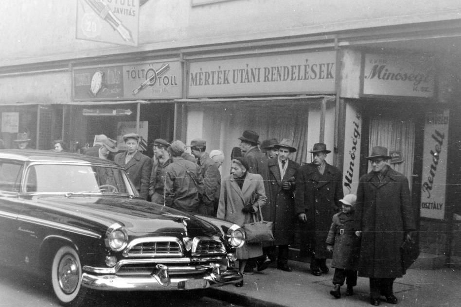

Előzménye
Az 1948–1953 közötti időszakban Magyarországon sztálinista terror uralkodott, amelyet az ÁVO és az ÁVH kegyetlenkedései jellemeztek. Rákosi Mátyás és Sztálin személyi kultusza, valamint az erőltetett iparosítás növekvő szegénységet okozott. 1953-ban Nagy Imre reformokat vezetett be, de Rákosi és hívei visszarendeződésre törekedtek. 1956-ban Rákosi lemondott.
